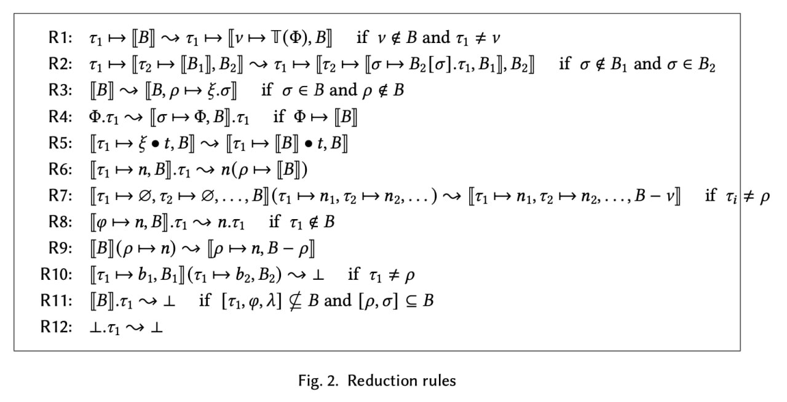

User-defined rules
You can define rewrite rules for the PHI language using YAML and the MetaPHI language that is a superset of PHI.
MetaPHI
See the MetaPHI Labelled BNF in Syntax.cf.
phi-paper rules
Currently, the eo-phi-normalizer supports rules defined in an unpublished paper by Yegor Bugayenko.

new.yaml
The rules are defined in new.yaml.
Each rule has the following structure:
name- Rule name.description- Rule description.context- (optional) Rule context. A context may contain:global_object- (optional) Global objectMetaId.current_object- (optional) Current objectMetaId.
pattern- Term pattern written inMetaPHI.- The pattern must be an object (formation, application, dispatch, etc.)
- When this term pattern matches a subterm of a
PHIterm,MetaIds from the term pattern become associated with matching subexpressions of that subterm.
result- Substitution result.MetaIds in the subterm pattern get replaced by their associated subexpressions.
when- A list of conditions for pattern matching.nf- A list ofMetaIds associated with subexpressions that should be in the normal form.- An expression is in the normal form when no rule can be applied to that expression.
present_attrs- A list of attributes that must be present in subexpression bindings.attrs- A list of attributes. Can includeMetaIds.bindings- A list of bindings that must contain these attributes.
absent_attrs- A list of attributes that must not be present in subexpression bindings.attrs- A list of attributes. Can includeMetaIds.bindings- A list of bindings that must not contain these attributes.
tests- A list of unit tests for this rule.name- Test name.input- An initialPHIterm.output- The initialPHIterm after this rule was applied.matches- Whether the term pattern should match any subterm.